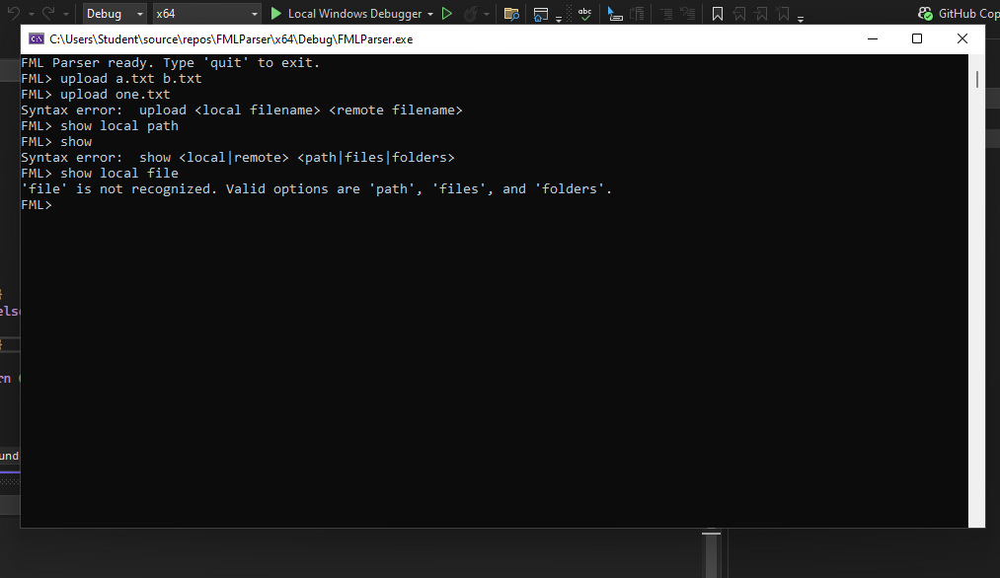
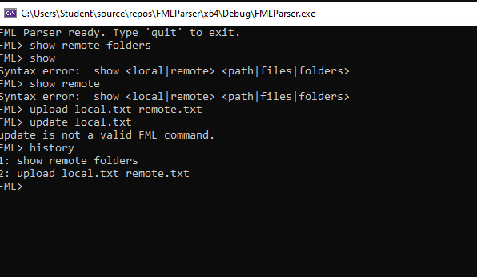
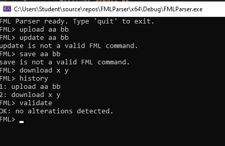
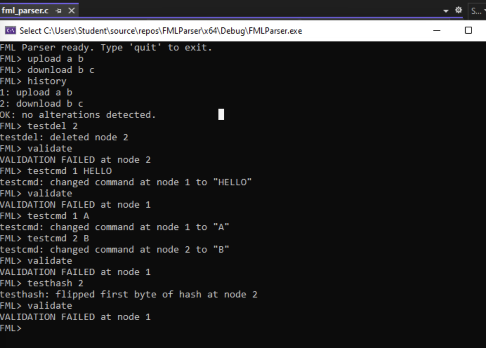
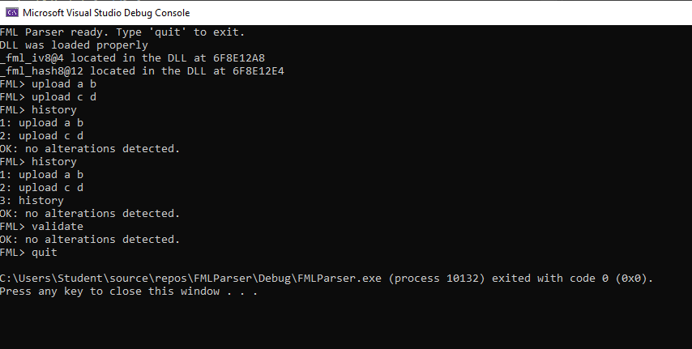
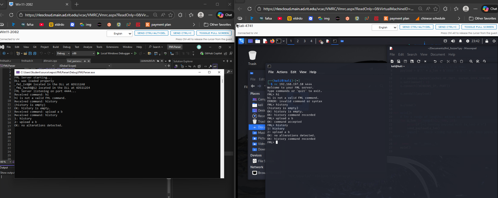

Project overview
The project grew through functional milestones rather than a single rewrite. I kept the same FML command grammar while adding state, integrity verification, modular hashing, and network access. That progression let me test each new responsibility against behavior that already worked.
The final repository contains the C parser/server, the hash DLL project, and the Python test clients used during the later exploit-development work. View the final parser source on GitHub →
Parser working
Case-sensitive command validation
I started with a console parser that read one line at a time, split it into tokens, and compared the first token against an allowlist of exact, case-sensitive FML commands. Each command had its own argument-count and option checks, so malformed input received a targeted usage error rather than being treated as valid data.
The supported grammar covered upload, download, delete, change, show, history, validate, and quit operations. For commands with subcommands, the parser also checked values such as local versus remote and path versus files or folders. I used strtok_s in the original Visual Studio console version after the compiler flagged the standard tokenizer as unsafe.

Valid commands recorded
Heap-backed command history
I added a singly linked list whose nodes stored heap-allocated copies of successfully parsed commands. Invalid syntax never entered the history. The history command first printed the existing list, then appended itself, so the current invocation did not appear retroactively in its own output.
Allocation failures were checked at both the command-copy and node stages. On exit, history_free() walked the list, freed each command string and node, and reset the head pointer instead of abandoning heap memory.

History made tamper-evident
Chained command hashes
Each node was extended with an eight-byte hash. The first node used a fixed initialization vector; every later node mixed its command text with the previous node’s stored hash. As a result, changing an earlier command also changed the hash expected by every surviving entry after it.
| Element | Role in the ledger |
|---|---|
| Command copy | Preserves the exact valid input associated with the node |
| Previous hash or IV | Links the current entry to the state before it |
| Eight-byte output | Stores the expected integrity value for later recomputation |
| Next pointer | Maintains ordered traversal through the in-memory history |
The custom rotate/XOR/add mixing function demonstrates hash chaining, but an eight-byte educational hash is not a replacement for a reviewed cryptographic hash or message-authentication code.

Integrity failures located
Validation and tamper simulation
Validation starts from the same IV and recomputes the expected hash for every node in order. It stops at the first mismatch and reports that node’s index; a clean pass returns “no alterations detected.” History display also runs validation before the history command is appended.
I added controlled test helpers to delete a node, replace stored command text, or flip a byte in a stored hash. These helpers intentionally bypass normal parser behavior so I could verify that the validator detected changes rather than merely assuming the chain was correct.

Hashing separated from the parser
Runtime-loaded Windows DLL
I moved the IV and hash implementation into fmlhash.dll and exported fml_iv8 and fml_hash8. The parser loads the library with LoadLibraryW(), resolves decorated and plain export names with GetProcAddress(), and calls the functions through typed pointers.
Startup fails cleanly if the DLL or either export is missing, and FreeLibrary() releases the module during normal shutdown or initialization failure.

Parser exposed as a service
Single-client Winsock server
I converted the console interface into a TCP service with Winsock 2.2. The program creates a stream socket, binds to port 4444, listens, accepts one client, and uses recv() and send() for the prompt, command input, parser results, history, and errors. Valid network commands follow the same parser and ledger path as local commands.
The service extension deliberately placed an unbounded copy into a 64-byte stack buffer inside check(). That was an intentional lab vulnerability used to connect secure-coding lessons with later memory-corruption analysis; it is not safe server implementation.

Security assessment
The design demonstrates ordered audit data and tamper detection, but it is not a production audit system. The ledger exists only in process memory, the custom hash is not collision-resistant, and there is no external trust anchor. In particular, a validator cannot prove that the final node was never removed unless a trusted count, checkpoint, or signed head value exists outside the list.
A hardened version would remove the intentional overflow and test commands, use authenticated clients and encrypted transport, store the append-only history durably, include sequence numbers and timestamps, and protect each entry with HMAC-SHA-256 or signed checkpoints. Those changes would turn the educational chain into a stronger tamper-evident audit design.